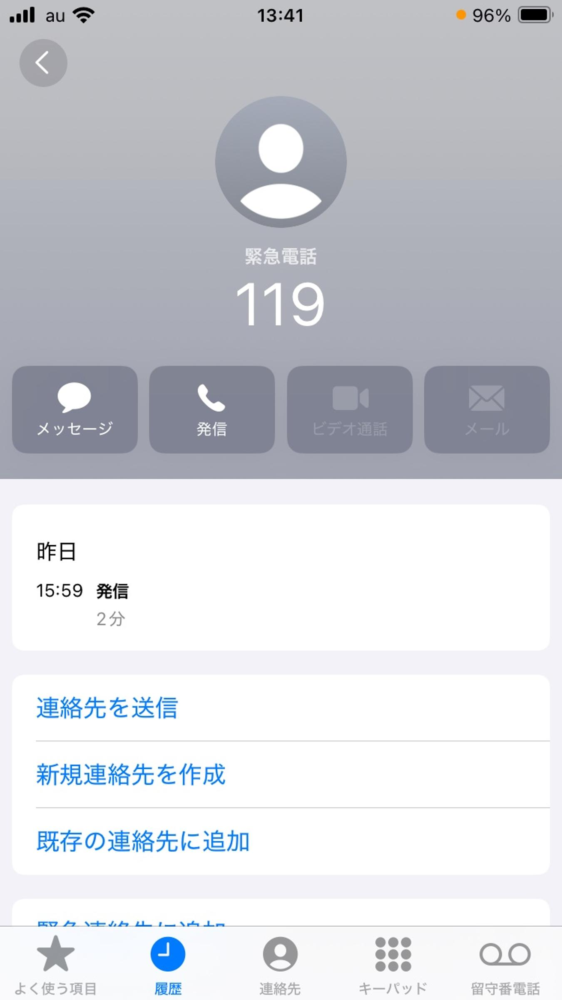

うるがいの話 ある日
最新: 中指の脱臼【うるがいの話 ある日】とは 一日だけのプログです
『うるがいの話』の最新一日だけのプログで、通信料が少なく経済的だ。カニの画像をクリックすると全ての日付が載る『うるがいの話』サイトを表示します
|
|
【うるがいの話】 うるがい(ｳﾙｶﾞｲ urugai)とは、『もずくがに』の名前でとても大きくなります。 |
|---|---|
|
|
【カミマヤーの話】 猫のことを方言でマヤーといいます。カミマヤー（kamimayaa）とは、神の猫のことです。 |
|
【たながぁの音楽】 たながぁ（ﾀﾅｶﾞｰ tanagaa）とは手長えびのことで、何種類かあり大きいのは車 エビぐらいになります。 |

|
【ぶながぁの話】 ぶながぁ(ﾌﾞﾅｶﾞｰ bunagaa)とは、赤い髪の毛、赤い身体、そして身長は１ｍ２０ｃｍ ぐらい、川の蟹を食べているの目撃された。場所は沖縄県国頭郡大宜味村のと ある村僕の隣近所に住んでいる爺さんから、聞いた話です。 |
|
|
【ギーマの話】 ギーマ(giima)とは、山原の里山に咲くスズランに似た、 花を付けます。実は食べられます、 気が付くと口の周りが紫になっています。 |
2025年01月12日 (日）中指の脱臼
15:19
指の脱臼はほとんどが中央の関節で発生し、通常は指が後方に曲げ
られた場合にみられます。（ヨメは左手中指が後方に弯曲）
ほとんどの指の脱臼に対する治療では、医師が脱臼した指の付け根
に麻酔薬を注射し、指の骨を正しい位置に戻します【整復】（救急
で医者が、ポッキと戻すとき音がし）。
多くが背側脱臼で、整復後、２－３週間伸展位で固定します。
フムフム、
ヨメが、昨日少し小雨が降る中ウォーキングして濡れた下り坂の道
路でスベリ、体を支えるため出した左手の中指が、脱臼しました。
初めて１１９で救急車を呼びました。

特に、骨が折れているわけでもなく、骨をもとの位置に戻したとの
こと。救急から帰ることは痛みは、治まっていました。痛み止めも
もらっているが、痛くないので飲まない！と言っている。
完治にはしばらくかかると思いますが、複雑骨折をして入院した
隣近所の二人の奥様方と比べると、軽く済んだので良かったとヨメ
は言っています。
毎朝、観音経を唱えています、災いは軽く済むようにと。もう、雨
のウォーキングはないですね、そして私もスベッタ経験のあるあの
下り坂の道路は二度と通らない、と思う。